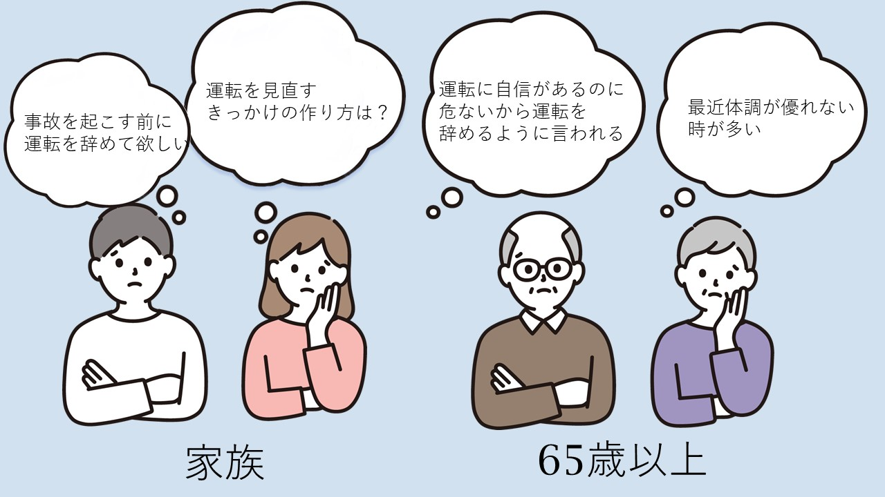

文字サイズ変更
ホーム

国連の世界保健機関(WHO)の定義では、65歳以上の人のことを高齢者としています。
高齢者になると不安要素は増えるばかりです。その中のひとつに自動車運転があります。 実は、自動車の運転が安全かどうかは、高齢者の体調によって違います。
体調が良いときは、安全運転をできる確率が高くなります。 しかし、高齢者になると身体の反応のスピードが低下します。
例として、ブレーキを踏むのが遅れたり、ハンドル操作のタイミングが遅れます。 また、高齢者は視力も低下しますので、事故を起こす可能性が高くなります。 しかし、高齢者の方々が交通ルールを遵守し，安全運転を心掛けることで、高齢者が事故を起こす可能性が下がると私たちは考えます。